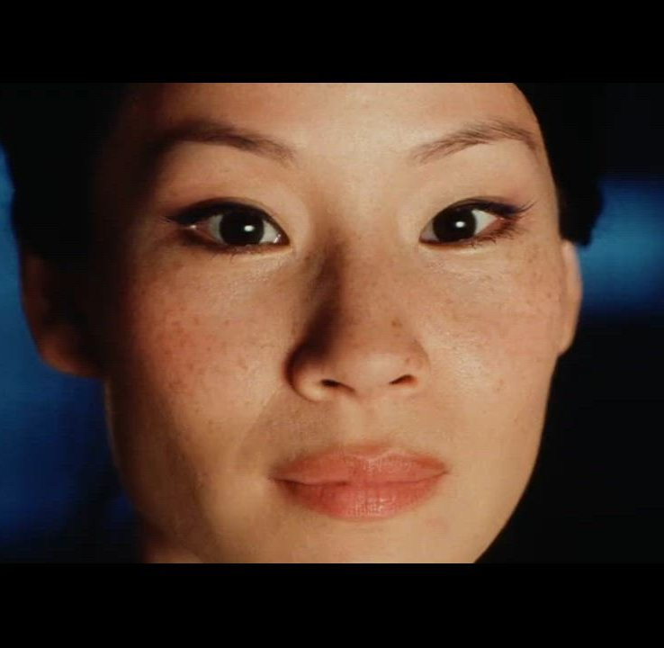

Suggested by Rekognition Celebrity Detection. Spot-check the face thumb + the asset list
for each row, then edit ground_truth.suggested.yaml directly: remove rows where the suggested
identity is wrong, prune/extend the contains: list where the auto-label missed or over-fired.
Save as ground_truth.yaml when done.
